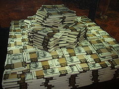

money
돈(영어: money)은 일반적인 유통수단이다. 사물의 가치를 나타내며, 상품의 교환을 매개하고, 재산 축적의 대상으로도 사용하는 물건이며, 화폐(貨幣, 문화어: 화페)라고도 한다. 예전에는 조개 껍데기, 짐승의 가죽, 보석, 옷감(비단), 농산물 등을 이용하였으나 현재는 금, 은, 동 따위의 금속이나 특수한 종이를 이용하여 만들며 그 크기나 모양, 액수 따위는 일정한 법률에 따라 정한다. 실제로 경제 생활에서는 화폐의 매개 작용을 해야 비로소 원하는 상품을 얻을 수 있다. 재화와 돈의 교환을 매매라 한다. 이와 같이 매매는 재화와 돈의 교환이므로, 재화와 재화의 교환은 매매가 아니다. 그러나 돈과 돈의 교환, 즉 환전은 매매이다.[1] 한편 유통 수단이나 지불 수단으로서 기능하는 화폐를 유통화폐라고 한다.

1.화폐의 역사
- 자연화폐 원시적인 물물교환경제에 있어서는 가장 빈번히 교환되고, 더욱이 일반적인 수용성(受容性)이 인정될 수 있는 것이 자연발생적으로 화폐의 기능을 수행하게 되었던 것이다. 화폐로 선정된 것은 시대와 지역에 따라 각각 다르나 역사적인 기록으로 남아있는 것은 조개 껍데기, 베와 비단, 가축, 피혁, 주옥, 소맥 등이 화폐적 상품이었다. 이런 것을 총칭하여 자연화폐라고 한다.
- 금속화폐 금·은은 가치가 높고 훼손·감멸이 적으며, 품질이 일정하고 또한 생산량이 비교적 안정되어 있으므로 그 지니고 있는 가치의 변동이 적으며 이러한 여러 이유에서 금속화폐를 대표하기에 이르렀다.
- 신용화폐 금·은이 그 소재가치에 의거하여 주조됨에 따라 본위화폐의 기능을 보충하는 보조화폐가 생겨났다. 즉 소액의 본위화폐의 주조는 양이 적어지므로 기술적으로 곤란해져 그 결과 금·은 이외의 동(銅), 알미늄, 니켈, 주석 등의 소재가 선정되어 보조화폐로 주조되었다. 이들은 본위화폐와는 달라 소재가치 이상의 액면가치가 부여되어 있는 점에 특색이 있다. 본위화폐의 대용물로서는 보조화폐 외에 정부지폐, 은행권, 어음, 수표가 있 다. 이 중에서 정부지폐란 정부 재정의 적자보전(赤字補塡)을 목적으로 정부에 의해 발행된 유통경제상 하등 실체가 없는 지폐인 것이다. 이에 대해서 은행권, 어음, 수표는 상품거래를 밑바탕으로 하는 유통경제상의 합리성을 갖고 있어 이 점에서 그 성격은 정부지폐와는 큰 차이가 있다. 먼저, 어음은 신용거래의 결제수단으로서 발행된 소위 상인의 화폐라고 생각할 수 있다. 이 상인의 화폐인 어음이 신용력(信用力)이 월등히 높은 은행신용에 의해 대체됨으로써 수표 또는 그 모체(母體)인 당좌예금 및 은행권이 생산된다. 수표와 은행권의 구별은 그 채무자가 시중금융기관이냐 중앙은행이냐의 차이에서만 기인되는 것으로서 그 선택은 주로 사회적인 거래관습[4] 에 기인하는 것이라 할 수 있다. 보조화폐, 정부지폐, 은행권, 수표(내지는 당좌예금)는 다같이 신용화폐(信用貨幣)라 불린다.[5]
- 실물화폐
- 대안화폐
- 전자화폐
- 유통화폐
- 통화량
- 화폐정책
- 돈은 최고의 종이자 최악의 주인이다.
-프랜시스 베이컨 - 화폐는 인간의 노동과 생존의 양도된 본질이다.
-카를 마르크스 - 돈은 주조된 자유다.
-표도르 도스토옙스키 - 돈을 사랑함이 일만 악의 뿌리가 되나니 이것을 탐내는 자들은 미혹을 받아
믿음에서 떠나 많은 근심으로써 자기를 찔렀노라.
-디모데전서 6장 10절 - 돈을 사랑하지 말고 있는 바를 족한 줄로 알라. 그가 친히 말씀하시기를
내가 결코 너희를 버리지 아니하고 너희를 떠나지 아니하리라 하셨느니라.
-히브리서 13장 5절 - 내 삶의 궁극적인 목표는 자유로움을 추구하는 삶이다. 시간이 흐르고 나이를 먹으면서 나는 진정으로 내가 원하는 일, 하고 싶은 일이 무엇인지 깨닫게 되었다. 바꿔 말하면 하고 싶지 않은 일은 하지 않아도 될 자유를 찾고싶다는 말이기도 하다. 그러기 위해서는 경제적인 독립이 무엇보다 필요하다. 현대 사회는 자본주의 사회고, 돈이 보장해주는 자유는 생각보다 크다. 자유롭기 위해 나는 지금 바빠야 한다.
-조태룡
2.돈의 종류
돈에 대한 명언
https://ko.wikipedia.org/wiki/%EB%8F%88